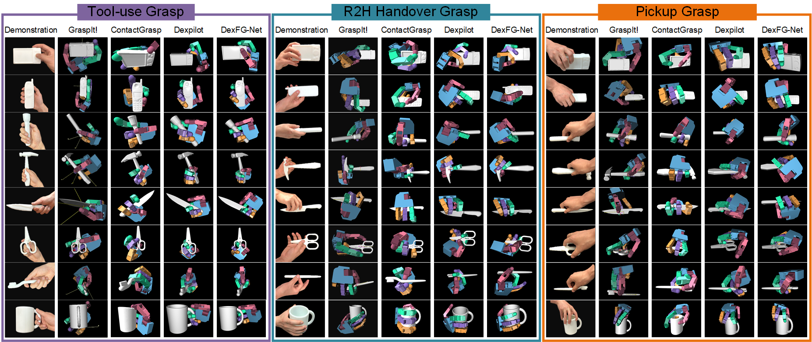

Visualization of Our Functional Grasp Dataset
Here we show the generated functional grasps for three intention (Tool-use, Robot-to-Human Handover and Pickup) on various object categories using five kinematically diverse robot hands based on the grasp synthesis algorithm we proposed. Due to space limitation, only 28 categories are shown here. Note that no further refinement in simulator is applied to these grasps, some failure cases are also shown here.
| Category | Hand | Intention Type |
|---|---|---|
Overview of the framework: DexFG
Functional Grasp Synthesis
Fistly, given a human grasp demonstration, we are able to get the affordance map on the object surface. Then we can map the affordance map from one object to similar objects through the dense correspondence. Finally, we optimize the articulated hand model which minimizes the cost function of diffused affordance map (contact).
Human Grasp Demonstration
Knuckle-level Contact Map
Contact Diffusion
Shadow Hand Grasp


The six-step synthesis algorithm is summarized in following order:
- Establish knuckle-level hand-object contact to associate fine-grained contact between hand segments and object surfaces, using both object and hand meshes.
- Define auxiliary anchor points on the hand to align precise finger contacts with target objects.
- Obtain the initial grasp configuration for grasp optimization through human-to-robot hand grasp mapping.
- Obtain dense shape correspondence of category-level objects using a pretrained neural network for contact diffusion between objects of the same category.
- Apply a gradient descent-based algorithm to optimize the initial grasp configuration based on fine-grained hand-object contact objective functions.
- Refine the grasps in simulator to avoid both inter-penetration and self-penetration.
Grasp Generation
Object Reconstruction
Intention-conditioned Grasp Sampler

Data Augmentation
Iterative Grasp RefineNet
Results
Grasp Synthesis for Kinematically Diverse Robot Hands

Comparison with Baselines
Real Robot Grasp Execution

BibTeX
If you use our object dataset in your research, please cite the following papers: